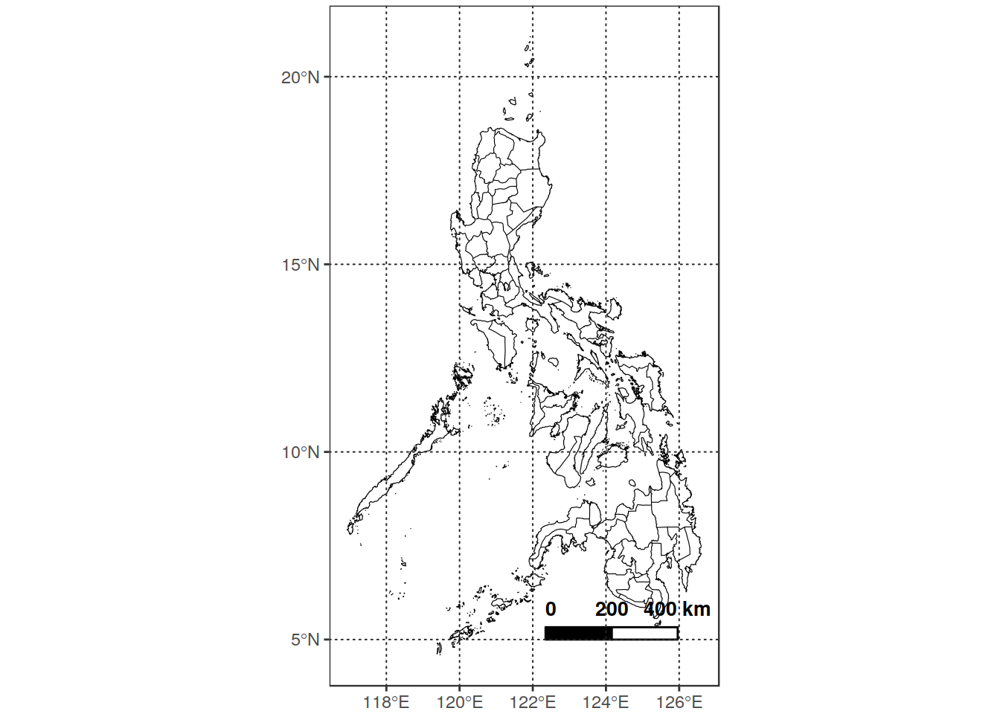
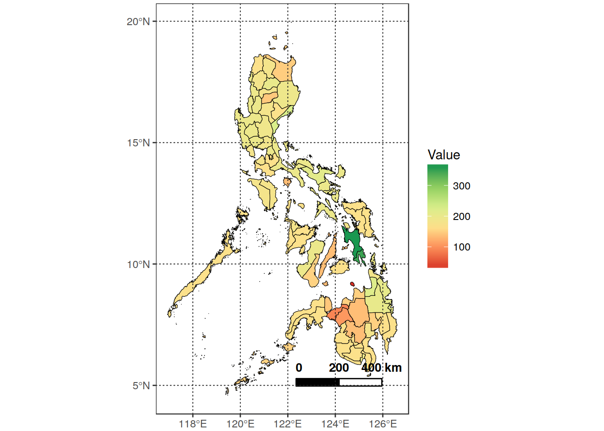
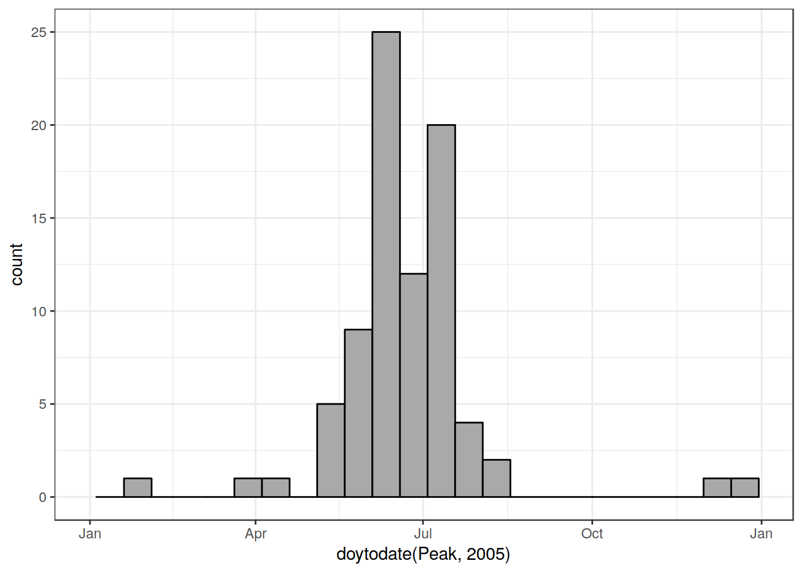
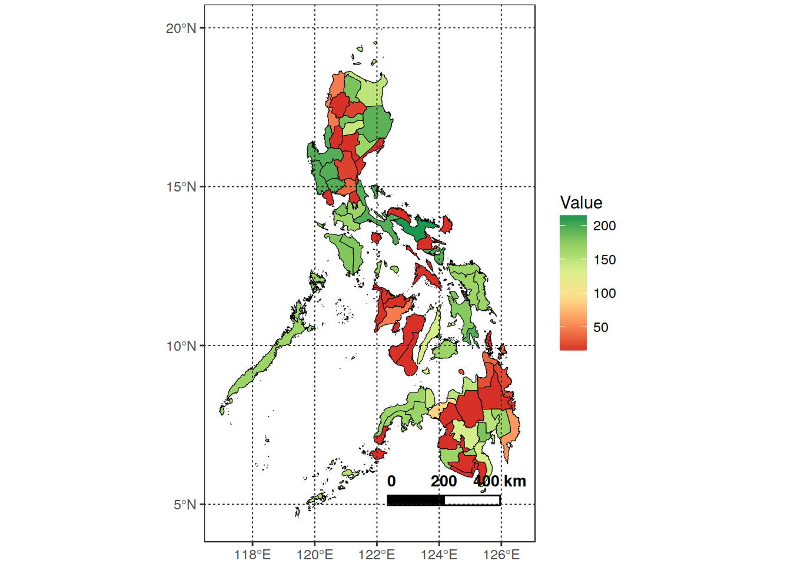

Here I am going to document the passages required to compare PhenoRice results with RiceAtlas
For simlpicity, let’s work on a selected area (in this case, the Philippines) (for Bhogendra: I created a folder structure containing all required input data. It would be good if you could replicate it on your machine so that we can more easily share the code)
# This is the main folder containing preprocessed PhenoRice global mosaics
# in the form of multiband TIFF images for each parameter (in "/orig"), as
# well as the results of "decircularization (in "/decirc")
mosaic_folder <- "/home/lb/my_data/prasia/Data/orig_mosaic/param_series/"
subsets_folder <- "/home/lb/my_data/prasia/Data/subsets"
make_folder(subsets_folder, type = "dirname", verbose = T)
subset_name <- "PHL"
in_country <- "PHL"
boundmask <- sprawl::get_boundaries(in_country, level = 1) %>%
sf::st_as_sf() %>%
sf::st_combine() %>%
sf::st_sf(id = 1, sf_column_name = ".")
plot_vect(boundmask, scalebar_dist = 200, show_axis = TRUE)
# Extract PhenoRice data for the PHL subset area - cropped and masked results are
# placed in "prasia/Data/Subsets/PHL"
pr_extract_subarea(mosaic_folder,
boundmask,
subset_name,
out_folder = subsets_folder)
#Extract RiceAtlas data for PHLExtract and visualize rice atlas data for an area and “variable - in this case”Peak" planting date.
in_txt <- "/home/lb/my_data/prasia/Data/vector/NormalizedDB.txt"
in_riceatlas_shp = "/home/lb/my_data/prasia/Data/vector/Ricetlas/riceatlas_asia.shp"
riceatlas_phl <- read_riceatlas(in_txt, in_riceatlas_shp, "PHL")
peak_plant_s1 <- subset(riceatlas_phl, Pheno_stage == "plant_st1")
plot_vect(peak_plant_s1, fill_var = "Peak", palette_name = "RdYlGn")
Here we immediately see something strange. The “dark green” polygon has completely different values. Let’s see a histogram:
p <- ggplot(peak_plant_s1, aes(x = doytodate(Peak, 2005))) +
geom_histogram(binwidth = 15, fill = "darkgrey", color = "black") +
scale_x_date(limits = doytodate(c(0,365), 2005) ,
date_labels = "%b") +
theme_bw()
p Looking at the original table of the rice_production_v1 shapefile, this is confirmed (i.e., it is not a data conversion problem). The “correct” dates for the Wet Season of the offending polygons is instead reported in this case in “plant_st_2”:
data_leyte <- subset(riceatlas_phl, Sub_region %in% c("Leyte" , "Samar") &
Pheno_stage %in% c("plant_st1", "plant_st2")) %>%
select(Sub_region, Season, Peak)
st_geometry(data_leyte) = NULL
data_leyte$Peak <- doytodate(data_leyte$Peak, year = 2005) %>%
format("%d - %b")
knitr::kable(data_leyte)| Sub_region | Season | Peak |
|---|---|---|
| Leyte | Wet | 28 - Dec |
| Leyte | Dry | 26 - Jun |
| Samar | Wet | 15 - Jun |
| Samar | Dry | 31 - Dec |
You can see that the two seasons are “reversed” in Leyte. The problem is that if these kind of errors are “widespread” among the DB, then making the comparisons with PhenoRice may be difficult.
Additionally, comparing the rice_production_v1 and rice_calendar data show inconsistencies. For example, in rice_calendar, South Leyte polygon has correct data, while in rice_production_v1 they are wrong. However, though in general the other polygons have similar values, they are not identical.
Finally, another problem is that, as in original PhenoRice outputs, the DOYs are not “decircularized”. This makes things difficult because area with the same calendar can have for example “peak date” for planting equal to 360 or 10. I will have to think of a way to solve this problem, if we wish to compare PhenoRice with RiceAtlas.
in_txt <- "/home/lb/my_data/prasia/Data/vector/NormalizedDB_Asia_new.txt"
in_riceatlas_shp = "/home/lb/my_data/prasia/Data/vector/Ricetlas/riceatlas_asia.shp"
riceatlas_phl <- read_riceatlas(in_txt, in_riceatlas_shp, "PHL")
peak_plant_s1 <- subset(riceatlas_phl, Pheno_stage == "plant_st1")
plot_vect(peak_plant_s1, fill_var = "Peak", palette_name = "RdYlGn")
riceatlas_phl %>%
select(Sub_region, N_seasons, Season, Pheno_stage, Start, Peak, End)## Simple feature collection with 492 features and 7 fields
## geometry type: MULTIPOLYGON
## dimension: XY
## bbox: xmin: 116.9283 ymin: 4.58694 xmax: 126.6054 ymax: 19.96611
## epsg (SRID): 4326
## proj4string: +proj=longlat +datum=WGS84 +no_defs
## # A tibble: 492 x 8
## Sub_region N_seasons Season Pheno_stage Start Peak End
## <chr> <int> <chr> <chr> <int> <int> <int>
## 1 Mountain Province 2 Wet plant_st1 105 181 258
## 2 Mountain Province 2 Dry plant_st2 349 365 46
## 3 Mountain Province 2 <NA> plant_st3 0 0 0
## 4 Mountain Province 2 Wet harv_st1 227 304 15
## 5 Mountain Province 2 Dry harv_st2 105 120 166
## 6 Mountain Province 2 <NA> harv_st3 0 0 0
## 7 Negros Occidental 2 <NA> plant_st1 319 15 74
## 8 Negros Occidental 2 <NA> plant_st2 135 196 258
## 9 Negros Occidental 2 <NA> plant_st3 0 0 0
## 10 Negros Occidental 2 <NA> harv_st1 46 105 135
## # ... with 482 more rows, and 1 more variables: geometry <simple_feature>Problem is evidently related to not accounting for circular nature of DOY.